Service UI
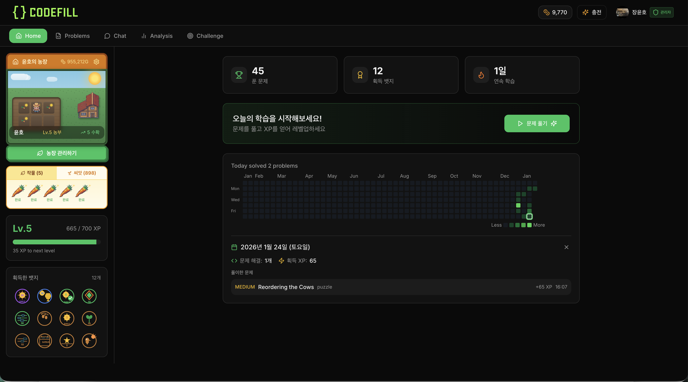
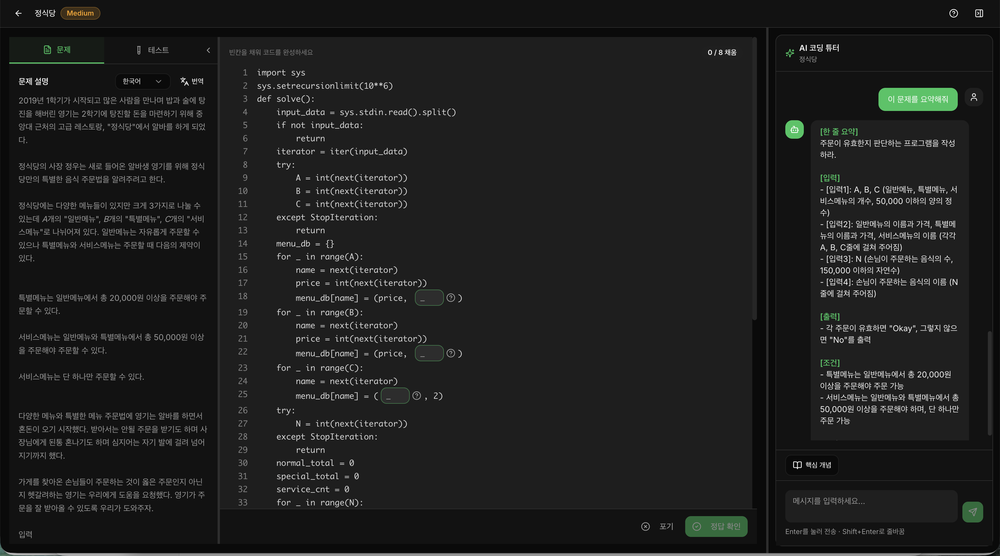
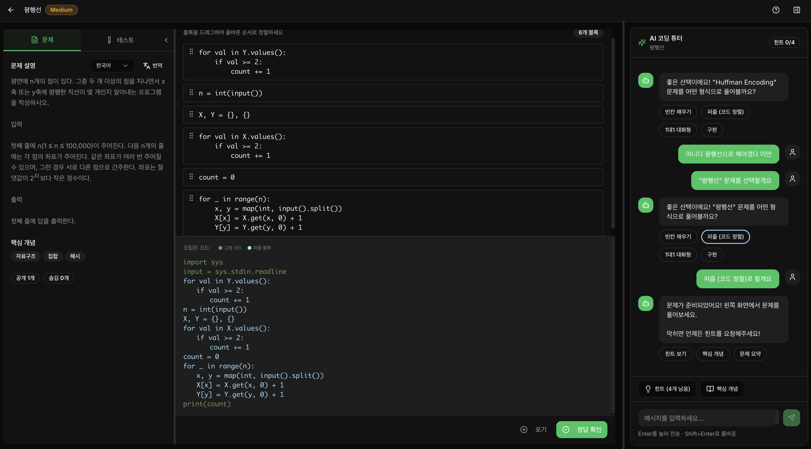
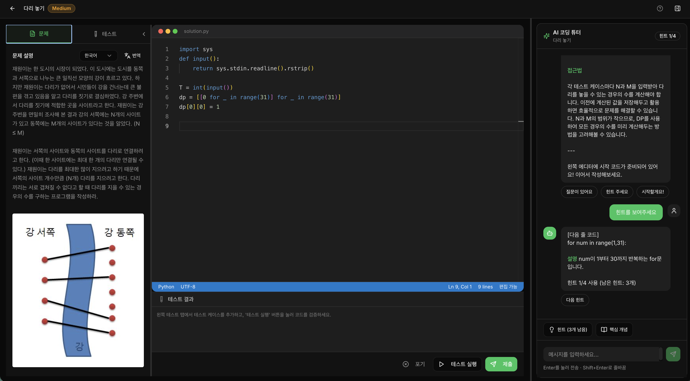
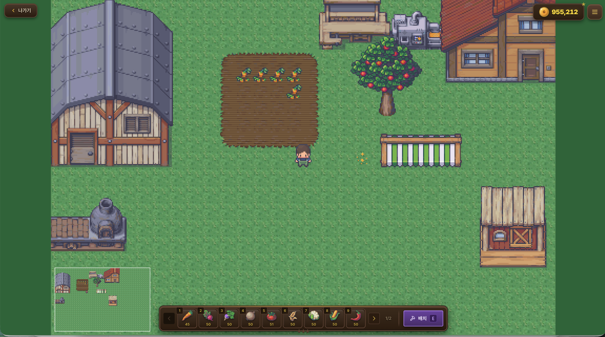

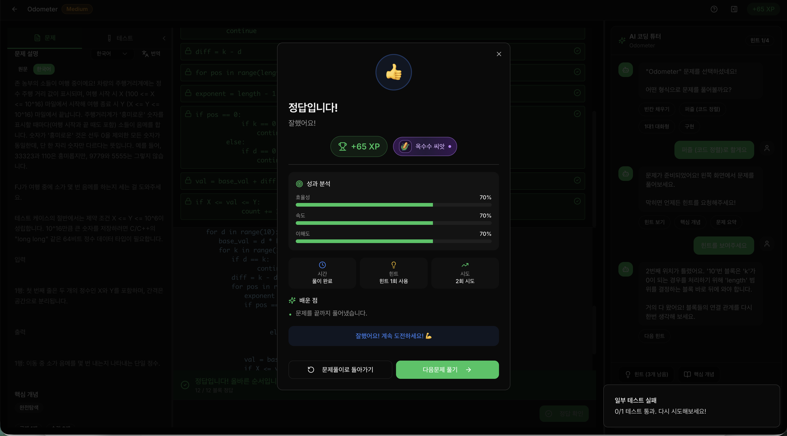
12개 LLM Agent가 협업하는 Multi-Agent 오케스트레이션 시스템. 4가지 문제 유형, RAG Hybrid Search, ELO + BKT 학습 분석, 농장 기반 게이미피케이션을 통합한 풀스택 AI 교육 서비스.






ELO 레이팅과 BKT(Bayesian Knowledge Tracing)를 결합하여 26개 토픽별 숙련도를 추적하고 AI Coach가 맞춤형 학습 경로를 제안합니다.
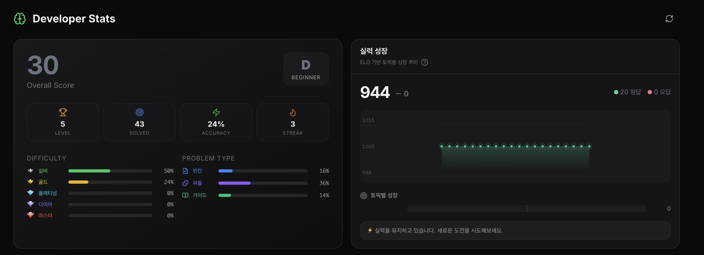
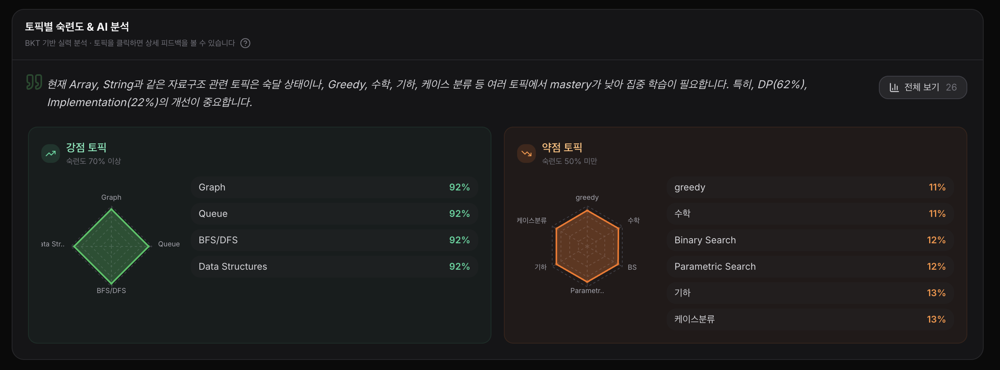
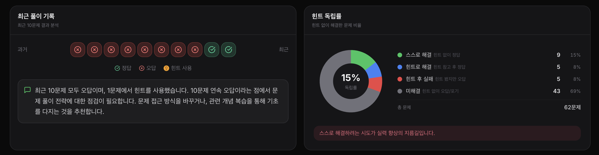
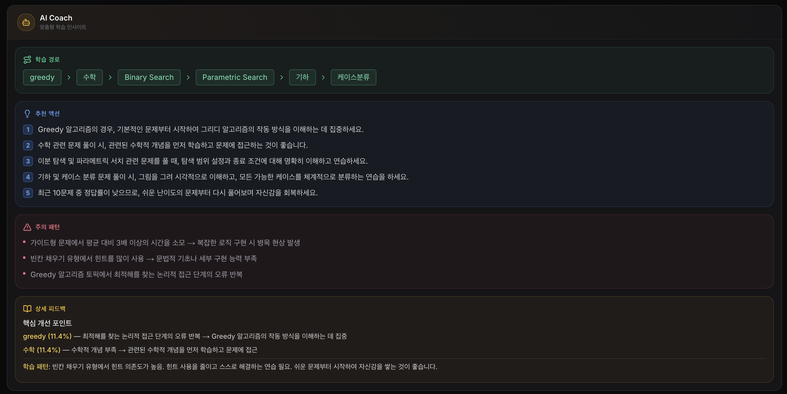
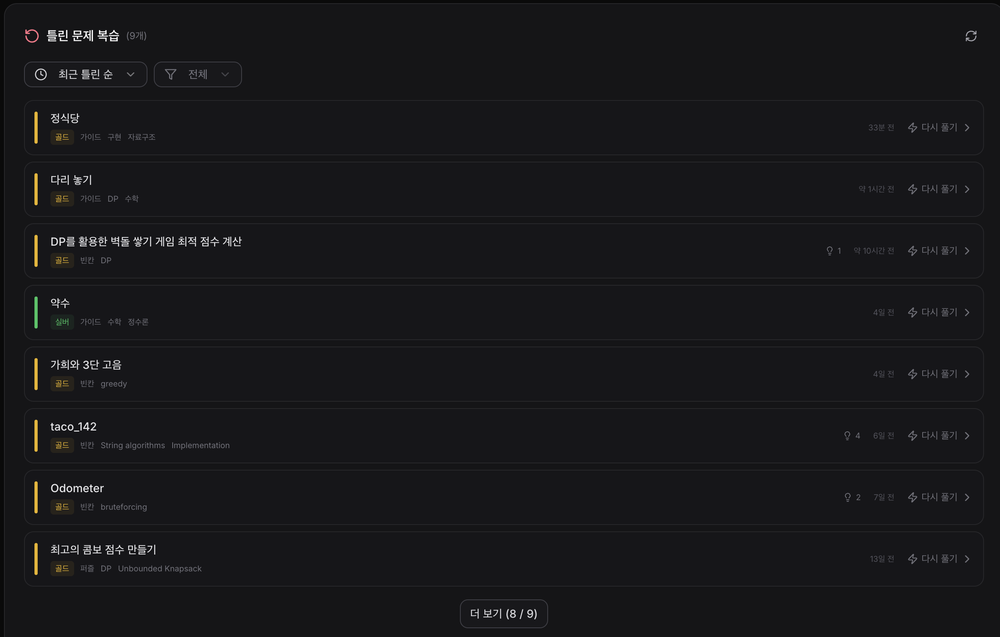
CodeFill은 12개의 전문화된 LLM Agent가 협업하여 사용자 맞춤형 코딩 학습을 돕는 AI 교육 플랫폼입니다. Baekjoon(8,000+), TACO(1,500+), Programmers(459) 등 10,000개 이상의 문제와 4가지 문제 유형(빈칸/퍼즐/대화형/직접구현), RAG 문제 검색, ELO + BKT 학습 분석, 농장 게이미피케이션을 통합했습니다.
기존 코딩 학습 플랫폼은 "문제 제공 → 정답 확인"의 단순한 흐름에 그칩니다. CodeFill은 소크라테스식 교수법을 적용해 학습자가 스스로 답을 찾아가도록 유도합니다. 다양한 학습 시나리오에는 Multi-Agent 협업으로 대응합니다. 게이미피케이션으로 학습 동기도 유지합니다.
빈칸 채우기(핵심 코드 완성), 퍼즐(코드 블록 정렬), 1대1 대화형(AI 튜터와 단계별 학습), 직접 구현(처음부터 코딩). 각 유형별 전문 Agent가 힌트와 피드백 제공.
Intent 분류, 문제 생성(CodeGen), 유형별 변환(Blank/Puzzle/Guided), 사용자 풀이 기반 힌트, 코드 검증, 피드백 분석 등 전문화된 Agent들이 OpenRouter로 작업에 맞는 LLM(Gemini/GPT-4o-mini)을 선택해 협업.
pgvector 기반 Vector Search + 메타데이터 필터링의 Hybrid Search. 유사도 0.30 미만 시 Claude Sonnet이 참고 문제를 분석하여 새 문제 즉시 생성.
문제 풀이 성능 기반 ELO 레이팅(600~1600)과 Bayesian Knowledge Tracing으로 스킬별 숙달도 추적. 약점 분석 및 맞춤형 문제 추천.
문제 풀이로 씨앗/골드 획득 → 농장 아이템 구매 및 배치. 30+ 뱃지, 일일 미션, 주간 챌린지, 레벨 시스템, 친구 랭킹으로 학습 동기 부여.
사용자 메시지는 Intent Tool에서 category와 action을 분류한 후 InfoCollectionGraph(정보 수집), DiscoveryGraph(문제 탐색), SolvingGraph(문제 풀이) 중 적절한 파이프라인으로 라우팅됩니다.
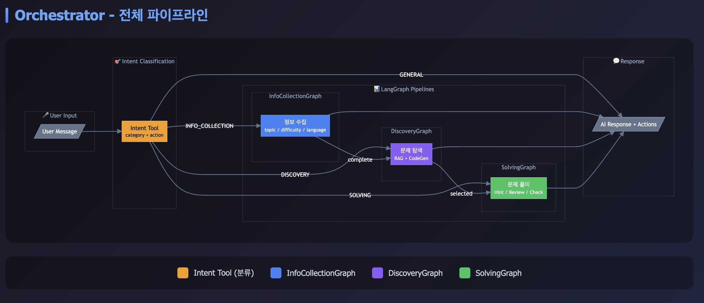
| Pipeline | Trigger | Description |
|---|---|---|
| INFO_COLLECTION | topic / difficulty / language 미수집 | 문제 탐색에 필요한 사용자 선호 정보 수집 |
| DISCOVERY | 정보 수집 완료 (complete) | RAG + CodeGen을 통한 문제 탐색 및 생성 |
| SOLVING | 문제 선택됨 (selected) | Hint / Review / Check 등 풀이 지원 |
| GENERAL | 일반 대화 | 인사, 감사, 일반 질문 등 직접 응답 |
사용자 요청은 의도 분류를 거쳐 알맞은 에이전트로 라우팅됩니다. 각 에이전트는 자기 역할만 처리하면서 대화 상태를 공유합니다. 화면부터 외부 서비스까지 계층별로 나누면 다음과 같습니다.
표시가 있는 칸이 직접 맡은 부분입니다. AWS 배포와 CI/CD는 팀원이 구성했습니다.
의도 분류 다음부터 한 문제를 풀고 피드백을 받기까지 다섯 단계를 거칩니다.
| Agent | Model | Role |
|---|---|---|
| CodeGen Agent | Gemini 3 Pro | RAG 실패 시 참고 문제 분석 후 새로운 창의적 문제 생성 |
| Blank Problem Agent | Gemini Flash | 원본 코드에서 핵심 부분만 빈칸으로 변환 (구조 100% 유지) |
| Puzzle Problem Agent | Gemini Flash | 코드를 논리적 블록(5-12개)으로 분해, 들여쓰기 레벨 계산 |
| Guided Problem Agent | Gemini Flash | 개념 설명 → 변수 가이드 → 스타터 코드 생성 |
| Guided Tutor Agent | GPT-4o-mini | 1대1 대화형 튜터링, Checkpoint 기반 진행상황 추적 |
| Hint Agents (x3) | Gemini Flash | 유형별(빈칸/퍼즐/대화형) 사용자 풀이 기반 맞춤 힌트 생성 |
| Chat Agent | GPT-4o-mini | 문제 풀이 중 일반 채팅 및 질문 응답 |
| Free Chat Agent | GPT-4o-mini | 자유로운 대화, 알고리즘 개념 질문 응답 |
| Feedback Agent | GPT-4o-mini | 풀이 완료 후 5단계 등급 피드백: Perfect/Excellent/Good/Keep Going/Learning |
| Analysis Agent | Gemini Flash | 학습 데이터 분석, ELO/BKT 계산, 약점 분석 리포트 |
| Service Category | Services | Description |
|---|---|---|
| Core | RAG, Embedding, CodeValidator, PuzzleValidator | 문제 검색, 임베딩 생성, 코드/퍼즐 검증 |
| Gamification | Badge, Farm, Mission, SeedReward | 뱃지 부여, 농장 관리, 미션/챌린지, 보상 |
| Analysis | Feedback, MetricsCalculator, StatsCache, BKT | ELO 계산, BKT 숙달도, 통계 캐싱 |
| Personalization | CollaborativeFiltering, Personalization | 유사 사용자 추천, 개인화 학습 경로 |
| Session | SessionTracker, ChatSession, UserHistory | 학습 세션 추적, 채팅 세션, 풀이 이력 |
| External | OpenRouter, Judge0, Translator, LangSmith | LLM 라우팅, 코드 실행, 번역, 모니터링 |
사용자 입력은 Intent Tool에서 category와 action을 분류한 후 InfoCollectionGraph(정보 수집), DiscoveryGraph(문제 탐색), SolvingGraph(풀이 지원) 중 적절한 파이프라인으로 라우팅됩니다.
원본 문제(솔루션 포함)를 사용자가 선택한 유형으로 변환합니다. 각 Agent는 원본 코드의 구조를 100% 유지한 채 학습용 형태로 바꿉니다.
소크라테스식 질문으로 학습자가 스스로 문제를 해결하도록 유도합니다. 사용자의 현재 풀이 상태(빈칸 답안, 블록 배치, 코드 진행상황)를 분석하여 유형별 전문 Hint Agent가 맞춤형 힌트를 제공합니다.
ELO 레이팅으로 전체 실력을 수치화하고 Bayesian Knowledge Tracing으로 26개 토픽별 숙달도를 추적합니다. AI Coach가 강점/약점을 분석하여 맞춤형 학습 경로와 개선 액션을 제안합니다.
문제 풀이로 씨앗/골드를 획득해 농장을 꾸밉니다. 뱃지와 미션으로 학습 동기를 유지합니다.
| Metric | Value |
|---|---|
| Total Problems | 10,000+ (Baekjoon 8K + TACO 1.5K + Programmers 459) |
| LLM Agents | 12 (CodeGen, Blank, Puzzle, Guided, Hint×3, Chat, Feedback, Analysis...) |
| Backend Services | 35+ (RAG, Gamification, Analysis, Session...) |
| API Routers | 20 (Practice, Problems, Analysis, Farm, Ranking...) |
| Intent Types | 30 (검색/추천 8, 풀이 5, 진행 3, 학습 3, 대화 6, 시스템 3...) |
| Problem Types | 4 (Blank, Puzzle, Guided, Implementation) |
| Badge Types | 30+ (도전, 연속, 정확도, 스킬별...) |
| Embedding Dimensions | 1536 (text-embedding-3-small) |
| ELO Range | 600 ~ 1600 |
Solution: 엄격한 프롬프트 규칙(변수명/매직넘버 빈칸 금지) + AST 기반 후처리 검증. 원본 코드와 diff 비교로 구조 변경 시 재생성.
Solution: 백엔드에서 블록별 정확한 indentation 레벨 계산 후 저장. 프론트엔드는 저장된 값을 신뢰하여 동적 계산 최소화.
Solution: Pydantic Structured Output으로 JSON 스키마 강제. 실패 시 재시도 + 후처리 Validation. LangSmith로 품질 모니터링.
Solution: pgvector IVFFlat 인덱스(lists=100) + 메타데이터 사전 필터링. Programmers 문제는 별도 임베딩 테이블로 분리하여 용도별 최적화.
Solution: Judge0 Sandbox 격리 환경. 시간(5초)/메모리(256MB) 제한. 네트워크 접근 차단으로 악의적 코드 방지.
Embedding Caching: 서버 시작 시 30개 Intent 임베딩 사전 생성, O(1) 조회 성능
PostgreSQL Cache: Redis 대신 Supabase PostgreSQL 기반 TTL 캐싱 (추천 5분, 선호도 10분)
Agentic RAG: 메타데이터 검색 우선, 필요시 시맨틱 검색 + 조건 완화 재시도
Edge Case Logging: EC-D01(의도 파악 실패), EC-D03(선택 범위 초과) 등 코드로 분류해 디버깅
Dynamic Response: 모든 응답 노드에서 LLM이 맞춤형 응답 생성